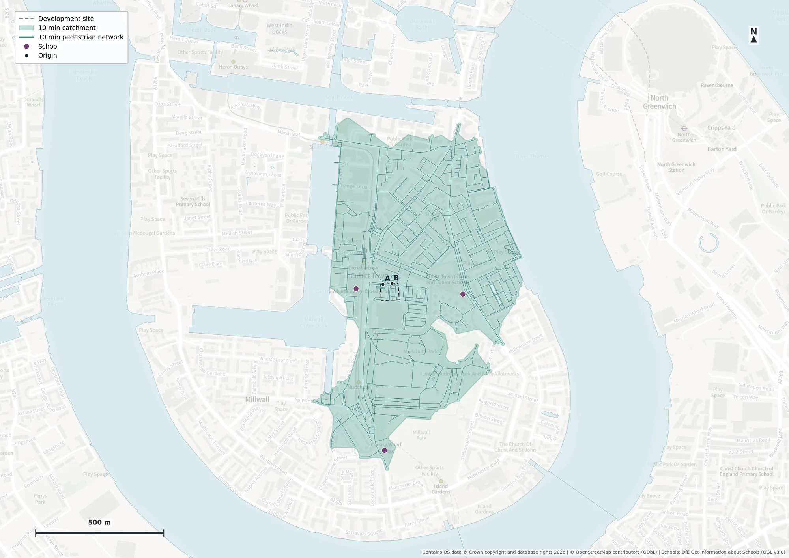
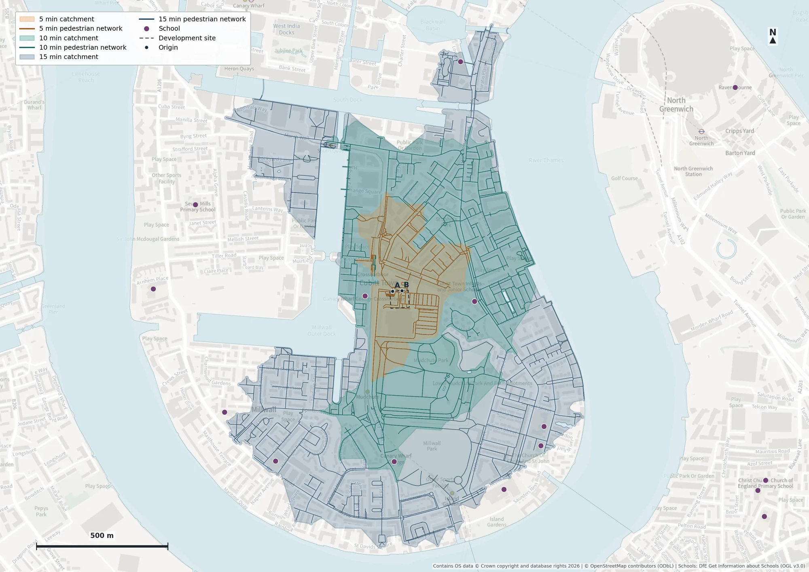
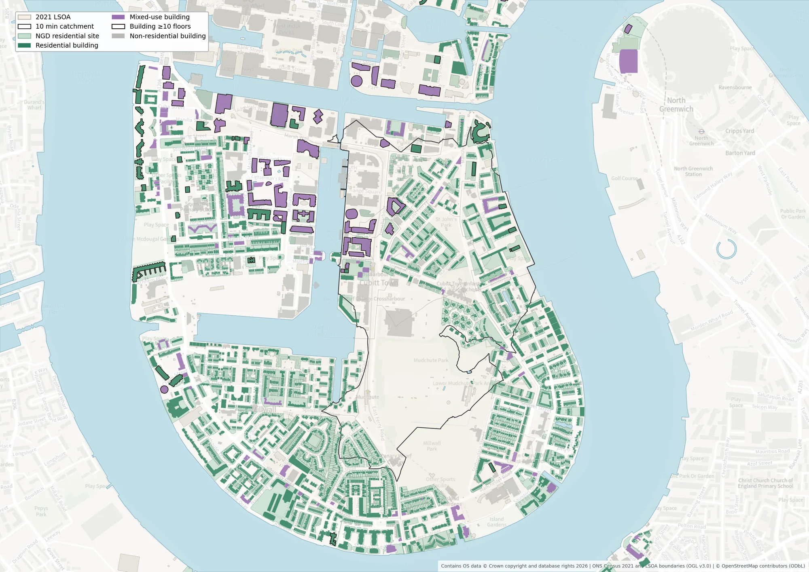
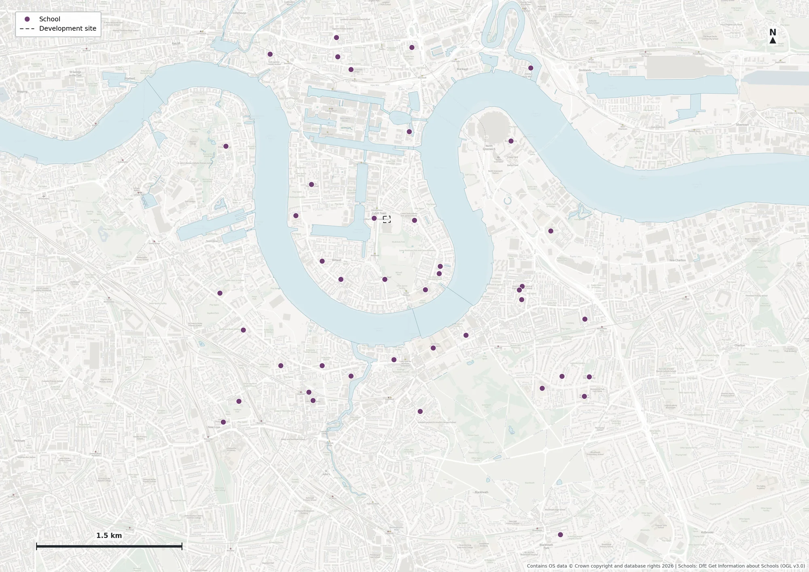

Data
Removed one duplicate population record, repaired one self-intersecting geometry, removed a duplicate school and filtered closed/overseas records. School coordinates were validated during cleaning.
Isle of Dogs · London
Walking Catchment Analysis
Walking accessibility, resident population and school context around a development plot in Crossharbour.
Prepared to support an early-stage masterplanning workshop.
A 10-minute walk from two plausible northern access points is the main planning scenario. Population estimates use Census 2021 usual residents.
Note to the architect · 156 words
A 10-minute walking catchment was modelled from two plausible pedestrian access points on the northern edge of the Crossharbour development plot. It covers approximately 68 hectares of analytical land and contains an estimated 8,016 residents, or 117.8 residents per hectare. 3 schools are identified within the catchment: Canary Wharf Primary, East Ferry; Canary Wharf Secondary; Cubitt Town Primary School. Population is based on Census 2021 totals allocated proportionally by the area of each census zone inside the catchment. Alternative residential land, building-footprint and floor-space allocations produce higher estimates, demonstrating sensitivity to where residents are located within census areas. The two access points are planning proxies rather than confirmed future entrances. School coordinates represent cleaned locations rather than verified gates, and the catchment represents modelled pedestrian accessibility. These findings provide a useful starting point for early-stage masterplanning: consider the surrounding residential population and school context alongside proposed pedestrian connections and confirm entrance arrangements as the design develops.
Approximately 68.0 hectares of analytical land can be represented within the modelled 10-minute walk from access proxies A and B. The pedestrian network determines travel time; the shaded contour provides a continuous spatial representation, with mapped water excluded from analytical land.

Five minutes describes the immediate neighbourhood; 15 minutes shows the wider walking context. All individual maps use the same extent and scale.

The reference circle has a 1.2 km radius (2.4 km diameter): the theoretical straight-line distance travelled in 15 minutes at 4.8 km/h. It is a spatial reference only.
3 cleaned school locations fall within the final 10-minute analytical land catchment. Map numbers correspond to the table below.
| Map | School | URN | Phase | Type |
|---|---|---|---|---|
| 1 | Canary Wharf Primary, East Ferry | 137016 | Primary | Free schools |
| 2 | Canary Wharf Secondary | 142879 | Secondary | Free schools |
| 3 | Cubitt Town Primary School | 100898 | Primary | Community school |
School locations use cleaned address/location coordinates rather than verified pedestrian gate locations; exact gate-to-gate walking times may differ.
Download school list (CSV)The Census area-weighted baseline is transparent, reproducible and directly tied to the supplied Census totals. Land, building and floor-space weighting test the assumption that residents are evenly distributed within each census area. These are alternative spatial-allocation scenarios, not statistical confidence intervals.
| Allocation method | Role | Estimated residents | Residents / ha |
|---|---|---|---|
| Census area-weighted baseline | Baseline | 8,016 | 117.8 |
| Residential land weighting | Sensitivity | 9,739 | 143.1 |
| Residential building-footprint weighting | Sensitivity | 9,065 | 133.2 |
| Residential floor-space weighting (central) | Sensitivity | 8,962 | 131.7 |
Floor-space scenarios range from 8,938 to 8,997 residents, depending on the assumed residential share of mixed-use buildings. Residential land weighting gives 9,739. Building footprints alone are a limited proxy in a high-rise neighbourhood.

Removed one duplicate population record, repaired one self-intersecting geometry, removed a duplicate school and filtered closed/overseas records. School coordinates were validated during cleaning.
Checked topology, components, access restrictions and local connections. Reviewed origins were inserted into their footways and partial edges were clipped at the time thresholds.
Compared polygon representations, treated mapped water and verified crossing corridors, and checked coverage of the reachable land network.
Checked the Census allocation and common land-area denominator, alternative allocation scenarios and OS NGD support-data coverage.
The comparison retained raw network buffer, water-aware network buffer, controlled hole treatment, travel-time contour and barrier-aware contour sensitivity. The selected contour showed the strongest agreement with the independent grid-based accessibility check, while providing a clearer continuous representation for workshop mapping. This grid is a model-based consistency check rather than observed ground truth.
Analytical polygons overlap mapped water by 0 m² and omit 0 m of reachable non-water network. Cartographic smoothing and bridge display corridors are kept separate from analytical land and population calculations.

Fictional development plot at Crossharbour, Isle of Dogs, London. Supplied site, DfE school records and ONS Census 2021 population/LSOA boundaries are combined with OSM pedestrian paths and water polygons. OS Maps provides visual context; OS NGD supports population sensitivity.
OSMnx walking graph, reviewed for pedestrian connectivity and restrictions. Walking speed is fixed at 4.8 km/h (1.333 m/s). Multi-source Dijkstra takes the shortest travel time from either origin; terminal edges are clipped proportionally to the remaining time. Crossing delays, slope and individual mobility are not modelled.
A and B are existing public-footway crossings at distinct northern boundary locations, reviewed as plausible access proxies. They are not confirmed future development entrances.
Network travel-time samples are interpolated using ordinary Delaunay triangles. Mapped water is excluded from analytical land; evidenced crossings have separate display corridors. The polygon represents modelled accessibility and is not an exact physical boundary. OSM completeness and representation influence the result.
For each LSOA: Census residents × area inside analytical catchment ÷ original full LSOA area. Estimated density is population ÷ 68.0 hectares of analytical land. This assumes uniform population within each LSOA and uses Census 2021 rather than a present-day headcount. The LSOA denominator retains its original area.
The cleaned school points are tested against the final analytical 10-minute land polygon using a boundary-inclusive spatial predicate. The school-location result is distinct from network routing to a verified school entrance.
Five and 15 minutes test the time threshold. Residential land, building footprints and direct floor counts test population distribution; they do not replace the Census baseline. Metric geometry calculations use British National Grid (EPSG:27700).

The two distinct footways cross the northern site edge at approximately 87° and 82°. Both were retained to avoid making the result depend on a single speculative entrance; tangential and private/service contacts were excluded.
Install the Conda environment and run the numbered Python scripts as described in the repository. API keys remain in a local ignored .env file. The website derives its school count and population metrics from final data when built.
AI assisted implementation, QA suggestions, documentation and cartographic iteration. The project author reviewed analytical decisions and outputs. Read the AI usage record.
Data and licensing
Contains public sector information licensed under the Open Government Licence v3.0. Department for Education, Get Information about Schools.
Source: Office for National Statistics, licensed under the Open Government Licence v3.0. Contains OS data © Crown copyright and database right 2026.
© OpenStreetMap contributors, Open Database Licence (ODbL).
OS Maps API presentation basemap; OS Places geocoding; OS NGD sensitivity support. Contains OS data © Crown copyright and database rights 2026.